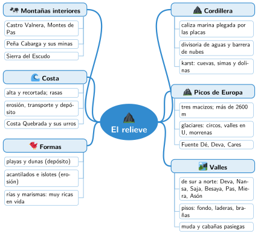

Bloque I · Cantabria, patrimonio natural
UD02 El relieve y los paisajes naturales
Sesiones
- Sesión 2.1 La Cordillera Cantábrica
- Sesión 2.2 Los Picos de Europa
- Sesión 2.3 Los valles y montañas interiores
- Sesión 2.4 La costa cantábrica
- Sesión 2.5 Playas, acantilados, rías y marismas
Al terminar la unidad
Mapa mental de la unidad

✏️ Repasa la unidad con el mapa: tapa una rama y explica en voz alta lo que pone.